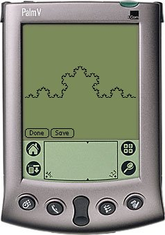

0L Systems is a simple implementation of a 0L System renderer. A 0L System, or more formally a L System, is a string rewriting system which produce a long string to be interpreted as commands for a LOGO turtle.
0L Systems runs on any Palm OS 2.0 or better device.
For more information about this exciting technology see Appendix C in "The Science Of Fractal Images".
Changelog:
v1r3 (2002-11-19) Added launcher icons. v1r2 (2002-03-01) Fixed some memory leaks. v1r1 (2001-07-27) Release 1.